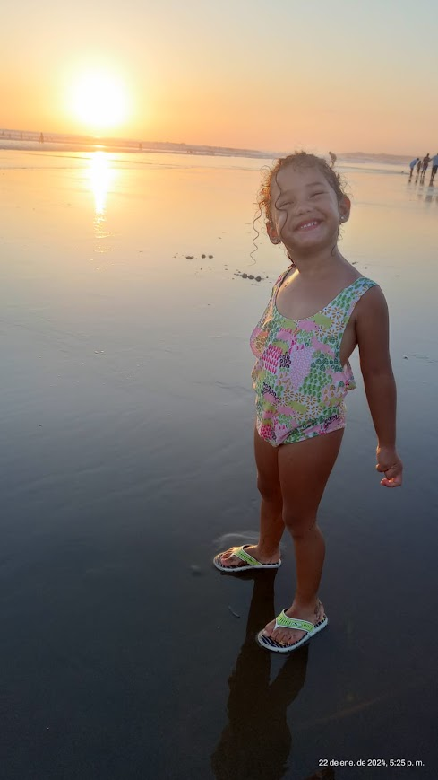
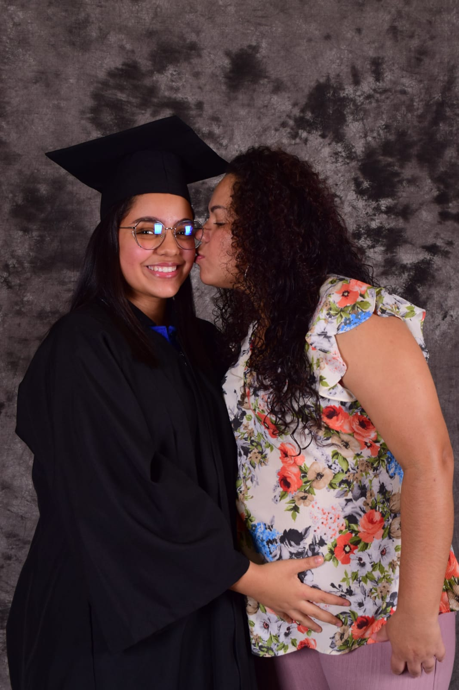
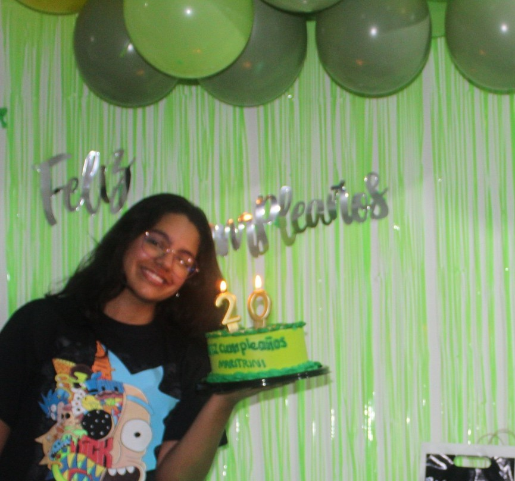
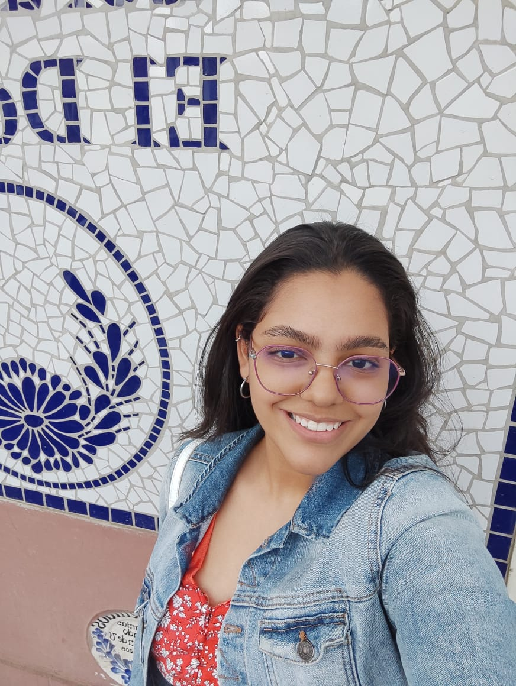
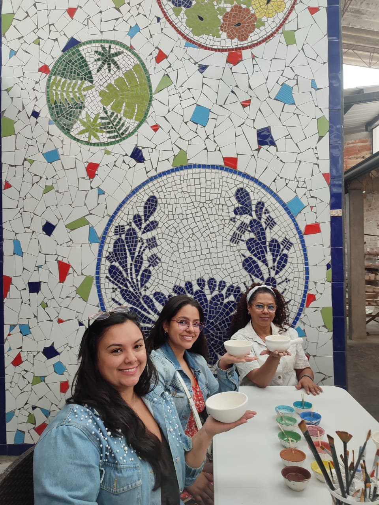
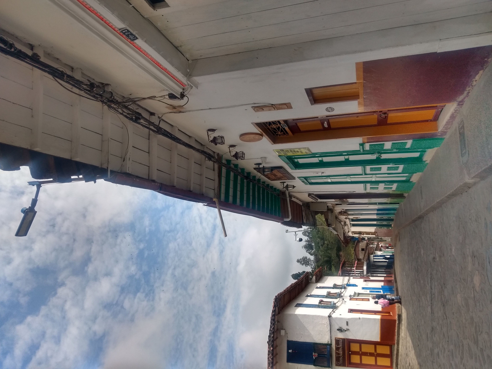

Sobre mi
Hola! Me llamo Mariana Perez Serna, casi todos me conocen como "Mari", pero en mi familia me dicen "Maritrini"Nací el 22 de octubre de 2003, en Medellín, Colombia. Mi mamá se llama Fernanda Serna y mi papá Carlos Pérez. Durante toda mi infancia viví con mi mamá, mis abuelos (Clara y Juan Carlos) y mi tía (Juliana), cuando inicie mi vida escolar curse transición en Comfama, una de las mejores etapas de mi vida y que me dejará marcada para siempre. Desde primero de primaria hasta cuarto grado estudié en la Escuela Juan Cancio Restrepo en Buenos Aires, Medellín.
El 22 de octubre de 2014 (Si, el día de mi cumpleaños) sufrí un accidente automovilístico, en el cual perdí la posibilidad de caminar por 4 meses, los cuales fueron bastante difíciles para mí, porque me gustaba salir a jugar con mis amigos a correr o juegos de este tipo. Y en Diciembre no pude vivir la tradición de asistir a las novenas navideñas de mis vecinos, por lo que viví un momento muy triste teniendo apenas 10 años. Hasta que a finales de Febrero de 2015 empecé terapias para poder caminar nuevamente
En 2015 mi mamá me pasó de colegio, entonces desde quinto hasta octavo grado lo cursé en la I.E Madre Laura. Luego dos años y medio, mi mamá toma la decisión de mudarnos para Costa Rica. El cambio más grande que he vivido en mi vida, teniendo 13 años, me tocó vivir la experiencia de dejar a toda mi familia (Incluyendo a mi papá) y amigos, para empezar en un nuevo país desde cero. Como inicie curso lectivo a mitad de año tuve que adaptarme de una forma muy rápida y brusca, porque no solo era cambio de colegio, sino de amigos, conocidos, cultura, dialecto, comida... y un sin fin de cosas más.
En Costa Rica terminé mi bachillerato en el año 2020, allí mismo inicié mi carrera universitaria en Ing. de Software, pero por la pandemia las clases eran virtuales, y por este motivo casi no entendía los temas. Luego de 1 año abandoné la carrera por motivos económicos y me puse a trabajar en un supermercado para poder ayudar económicamente en mi casa, porque en ese momento estaba embarazada y no podía trabajar.
Galeria





Mi rutina diaria
- Despertarme a las 8:00am
- Laverme los dientes
- Bañarme a las 8:30am
- Vestirme luego de bañarme
- Preparar mi desayuno
- Lavar los platos
- Arreglar mi habitación
- Empacar mi almuerzo
- Lavarme los dientes nuevamente
- Salir de la casa a las 11:45am
- Voy a la casa de mis abuelos, hasta la 1:00pm
- Salgo a tomar el bus para el parque San Antonio a la 1:15pm
- En el parque San Antonio, tomo el bus para RIWI
- Llego a RIWI a la 1:45pm
- Tomo todas las clases del día
- Salgo de RIWI a las 10:00pm
- Llego a la casa a las 10:30pm
- Preparo mi cena
- Ceno a las 10:50
- Me lavo los dientes
- Adelanto mis tareas
- Me durmo a la 1:00am